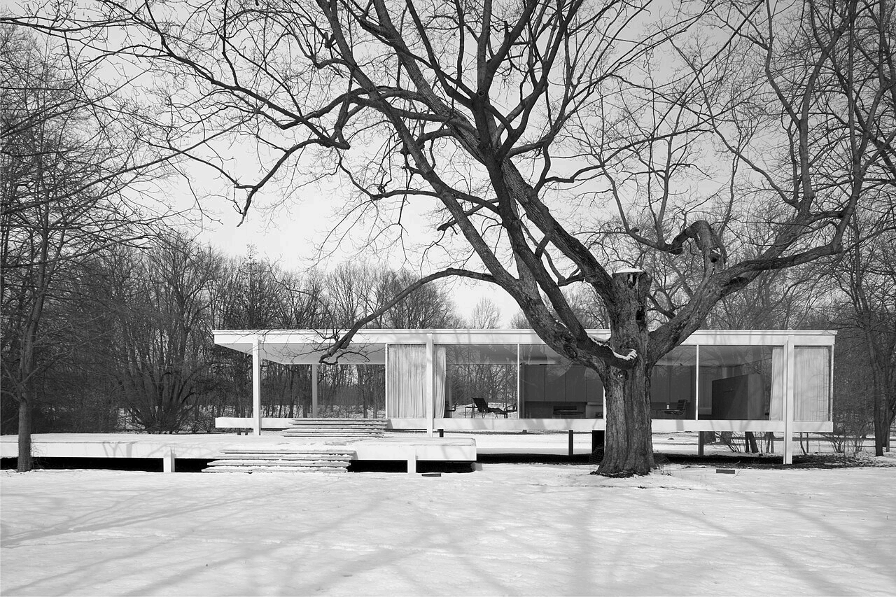
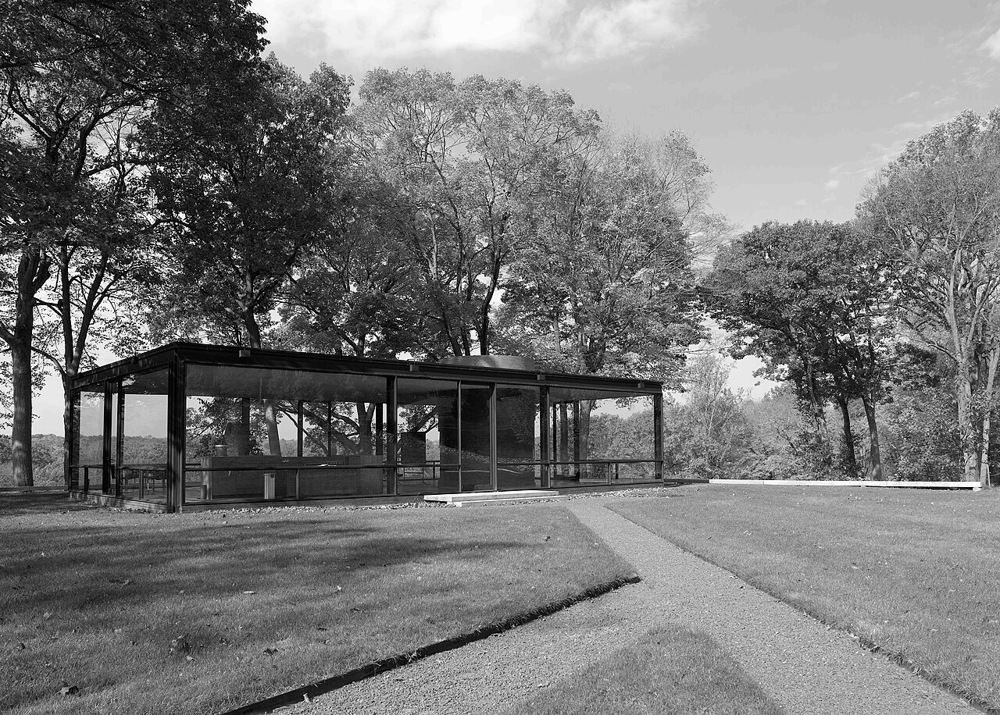

SELECTED BUILDINGS / READING INDEX
Two houses.
Two horizons.
A small atlas of transparent enclosures and their settings. Indexed by project, with photographs, brief observations and original source records.
Project index
| No. | Building | Location / completed |
|---|---|---|
| 001 | Edith Farnsworth House ↘ | Plano, Illinois / 1951 |
| 002 | Glass House ↘ | New Canaan, Connecticut / 1949 |
001 / PLANO, ILLINOIS
Edith
Farnsworth
House.
Ludwig Mies van der Rohe / 1951
A white horizontal frame stands apart from the snow and dark branches. The terrace extends the line of the building into its setting.
Open the monograph and plan →

002 / NEW CANAAN, CONNECTICUT
Glass House.
Philip Johnson / 1949
A dark frame follows the ground more closely. Glass reflects the trees, while the path establishes an approach to the low volume.
Read the official building account ↗ON THE READING OF A PLACE
Image, drawing,
then a note.
Keep the photograph large enough to understand its setting. Use a drawing to ask a specific spatial question. Let the caption explain what each record can actually tell us.
Return to the project index ↑Atlas sources
Both photographs: Carol M. Highsmith / Library of Congress. Public-domain photographs; monochrome WebP conversions. Building identities, architects and completion dates checked against official building histories.
Read both image records
Farnsworth photograph · Glass House photograph · Highsmith rights statement · Local rights record. This fictional reading room does not claim to have designed either building.